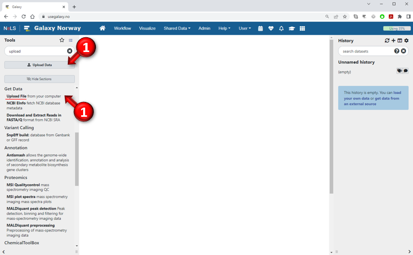
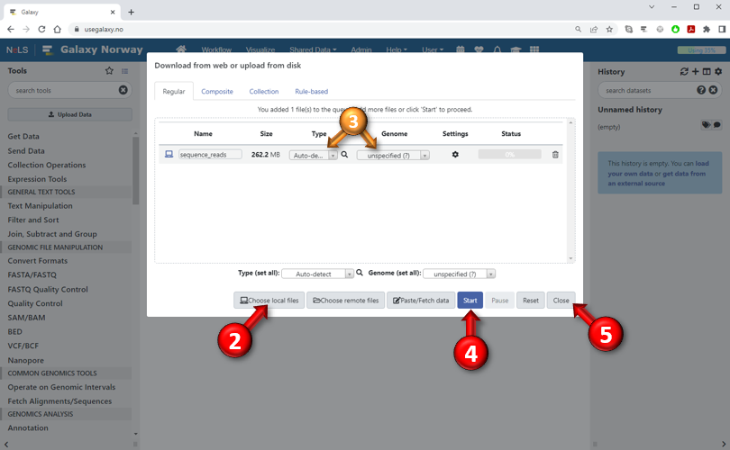

-
Click the "Get Data" category header at the top of the Tools panel and then select the "Upload File from your computer" tool.
Or, alternatively, just press the "Upload Data" button near the top of the Tools panel. The screen will go dark and the "upload files dialog" will appear (bottom image).

- Press the "Choose local files" button to select the file(s) you want to upload from your local computer. You can select multiple files at once.
It is also possible to "drag and drop" files from an external file browsers (such as e.g. Windows Explorer) directly into the dialog box.
If the files you want to upload are located on a web- or FTP-server, you can press the "Paste/Fetch data" button and enter their URLs in the appearing text box.
- After you have added a new file to the queue, you can specify the type of the dataset (format) and its associated genome build.
You can also change these attributes later by pressing the pencil icon next to the dataset in the History panel.
If you don't specify the data type, Galaxy will try to guess it based on the contents of the file.
- Press the "Start" button to start uploading the selected files. The progress of each file is shown in the status column.
- Press "Close" to close the dialog. If you close the dialog before all files are finished, Galaxy will continue to upload the files in the background.
Compressed files will be decompressed automatically.
